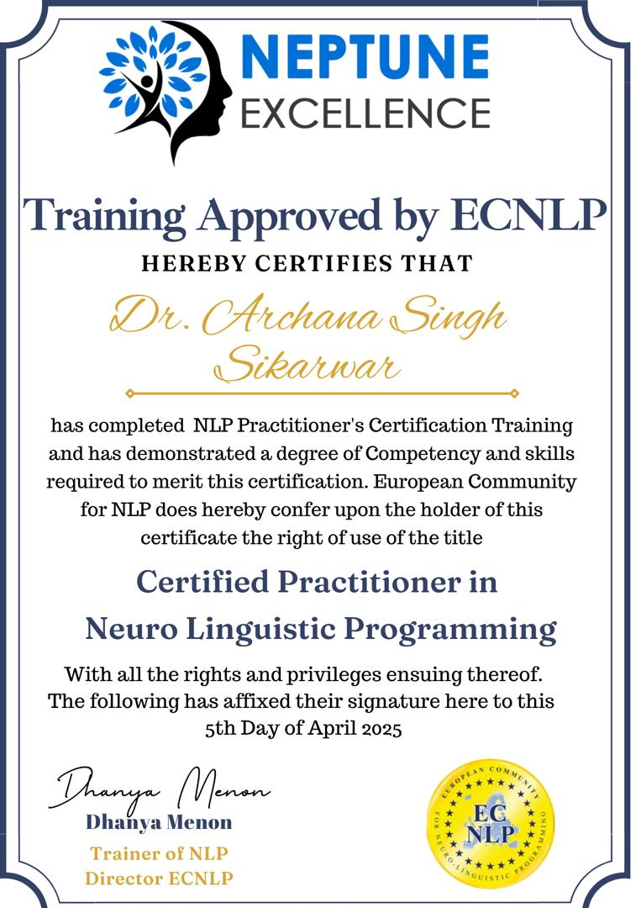
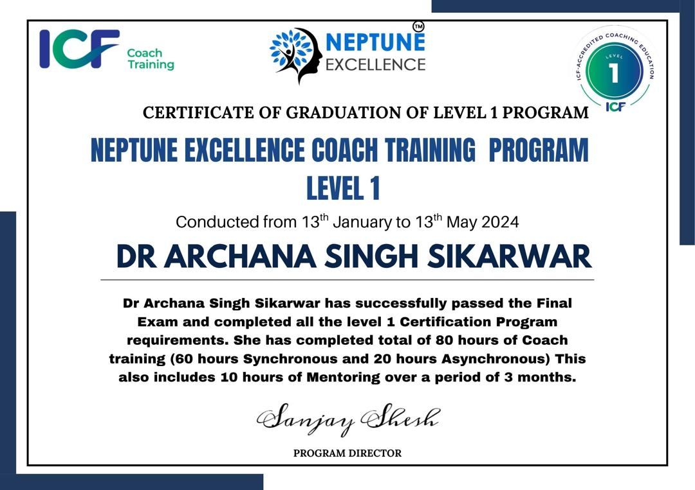

About Me
With over 12 years of experience in tertiary education, research, and academic leadership across India, USA, and Malaysia, I have dedicated my career to advancing the field of Biochemistry and academic innovation. My work spans teaching, curriculum development, and interdisciplinary research, with over 26 published papers and numerous international presentations.
Education
- PhD Biochemistry
- MSc Biochemistry
- BSc Biology
Professional Experience
- Consultant (Clinical Research), AMURA Health Pvt Ltd, India (2022)
- Assistant Professor, Faculty of Medicine, LUC Kuala Lumpur, Malaysia (2019–2020)
- Lecturer IV, International Medical University, Malaysia (2009–2017)
- Adjunct Faculty, Houston Community College, USA (2007)
- Research Volunteer, MD Anderson Cancer Center, USA (2006)
- Assistant Professor, Rajiv Gandhi College, India (2002–2004)
Research & Publications
Key Research:
- Development of dual-purpose diagnostic Dot-ELISA for snake venom detection
- Anti-tumor effects of snake venom on human breast cancer cell lines
- Correlation of Klebsiella pneumoniae serotypes with liver abscess in mouse models
Over 26 publications in peer-reviewed journals including British Microbiology Research Journal, International Journal of Innovative Research, and more. Topics cover microbiology, cancer biology, diagnostics, and public health.
Teaching & Curriculum Development
- Expertise in PBL, flipped classrooms, experiential learning, and eLearning
- Curriculum review and accreditation documentation for Biomedical Science Program
- Program Director, Semester and Module Coordinator for Biomedical Science Program
Honors & Certifications
- Certified Coach and practitioner in Neuro Linguistic Programming
- Certified Yoya Instructor (Ministry of AYUSH, Govt of India)
- Hind Rattan Award (2014) – Outstanding contributions by Indian diaspora
- Innovation Showcase Award – IMU eLearning Festival (2013)
- GATE Scholarship – Govt. of India
- Best Oral Presentation – International Conference on Food Engineering & Biotechnology (2011)

